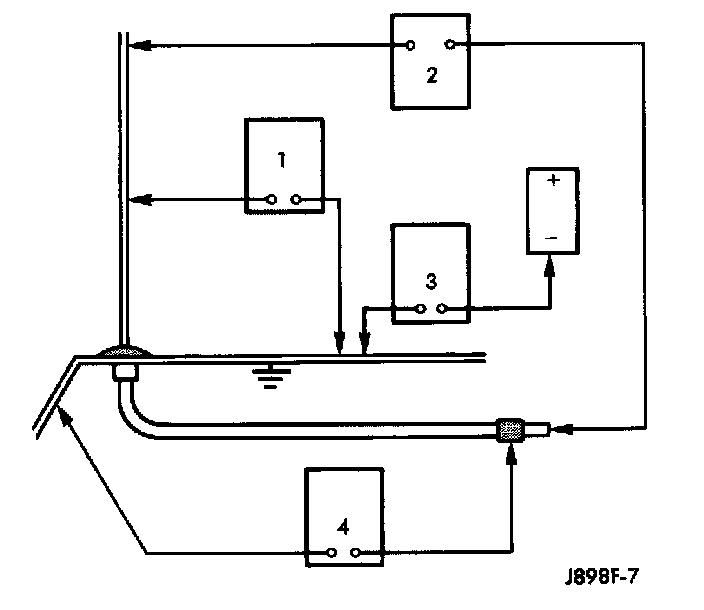

No Or Poor Radio Reception
WARNING: ON VEHICLES EQUIPPED WITH AIRBAGS, REFER TO AIR BAGS AND SEAT BELTS/AIR BAGS BEFORE ATTEMPTING STEERING WHEEL, STEERING COLUMN, OR INSTRUMENT PANEL COMPONENT DIAGNOSIS OR SERVICE. FAILURE TO TAKE THE PROPER PRECAUTIONS COULD RESULT IN ACCIDENTAL AIRBAG DEPLOYMENT AND POSSIBLE PERSONAL INJURY.The following four tests are used to diagnose the antenna with an ohmmeter:
- Test 1 - Mast to ground test
- Test 2 - Tip-of-mast to tip-of-conductor test
- Test 3 - Body ground to battery ground test
- Test 4 - Body ground to coaxial shield test.
Antenna Tests:

The ohmmeter test lead connections for each test are shown in Antenna Tests.
NOTE: This model has a two-piece antenna cable. Tests 2 and 4 must be conducted in two steps to isolate a coaxial cable problem; from the coaxial cable connection under the right end of the instrument panel near the right cowl side panel to the antenna base, and then from the coaxial cable connection to the radio chassis connection.
Test 1
Test 1 determines if the antenna mast is insulated from the base. Proceed as follows:
1. Unplug the antenna coaxial cable connector from the radio chassis and isolate.
2. Connect one ohmmeter lead to the tip of the antenna mast and the other lead to the antenna base. Check for continuity.
3. There should be no continuity. If continuity is found, replace the faulty or damaged fixed antenna base and cable assembly or power antenna unit.
Test 2
Test 2 checks the antenna for an open circuit as follows:
1. Unplug the antenna coaxial cable connector from the radio chassis.
2. Connect one ohmmeter test lead to the tip of the antenna mast. Connect the remaining lead to the center pin of the antenna coaxial cable connector.
3. Continuity should exist (the ohmmeter should only register a fraction of an ohm). High or infinite resistance indicates damage to the fixed antenna base and cable assembly or the power antenna unit. Replace the faulty antenna unit, if required.
Test 3
Test 3 checks the condition of the vehicle body ground connection. This test should be performed with the battery positive cable removed from the battery. Disconnect both battery cables, the negative cable first. Reconnect the battery negative cable and perform the test as follows:
1. Connect one ohmmeter test lead to the vehicle fender and the other lead to the battery negative post.
2. The resistance should be less than one ohm.
3. If the resistance is more than one ohm, check the braided ground strap connected to the engine and the vehicle body for being loose, corroded, or damaged. Repair the ground strap connection, if required.
Test 4
Test 4 checks the condition of the ground between the antenna base and the vehicle body as follows:
1. Connect one ohmmeter test lead to the fender and the other lead to the crimp on the antenna coaxial cable connector.
2. The resistance should be less then one ohm.
3. If the resistance is more then one ohm, clean and/or tighten the antenna base to fender mounting hardware.